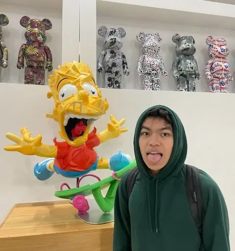
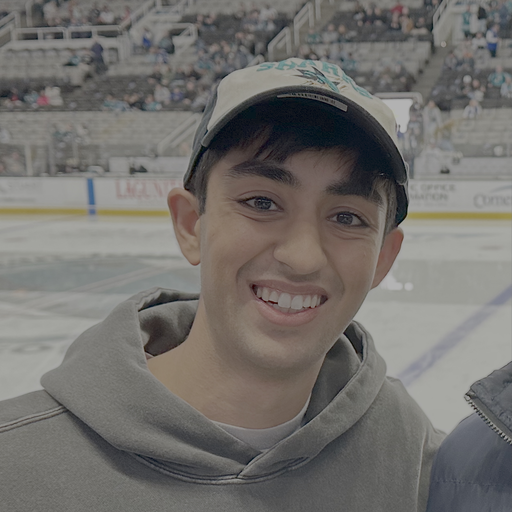
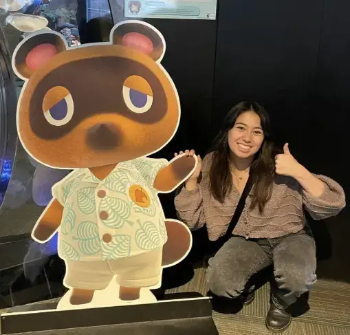

This website contains materials from a past semester. Information, assignments, and announcements may no longer be relevant. Please refer to the current semester's site for up-to-date content.
Staff
For logistics and administrative questions, please email cs188@berkeley.edu.
Access to these emails is denoted by the Staff Email Access tag. Future instructors and
head TAs may also be able to read emails here, but we can delete emails upon request.
If you have a non-course related question, you can view staff emails by pressing the button below:
Instructors
TAs
Hi! I’m a PhD student at BAIR doing research in reinforcement learning and cognitive science. I like painting and coffee!


Hello! I’m a 5th year MS student studying EECS. In my free time, I enjoy running the Fire Trails, trying out all the restaurants in Berkeley, and listening to Taylor Swift (eagerly waiting for October 3). Excited to meet everyone!!
Hi! I’m a 4th year EECS major (and Math minor) from Florida! I enjoy researching about the computer vision and tackling interesting problems. Outside of school, I love playing the drums, doing puzzles, and running! Looking forward to a great semester and feel free to reach out!
Tutors

hi hi! i’m isabella, and i’m senior majoring in eecs and minoring in comparative ethnic studies and data science. feel free to yap with me about video games, rock/indie music, and cooking! can’t wait to meet everyone this semester :)